Magento 2.x Integration¶
Note
To get started, you must have an account created with Talkable, and a Magento Marketplace account. If you do not have a Magento Marketplace account configured, follow these steps to connect one to your Magento store.
The Magento 2 Integration Extension is available to download in the Magento Marketplace. The extension supports all versions of Magento 2.0 or higher.
Installation¶
Visit the Magento Marketplace and get the Talkable extension.
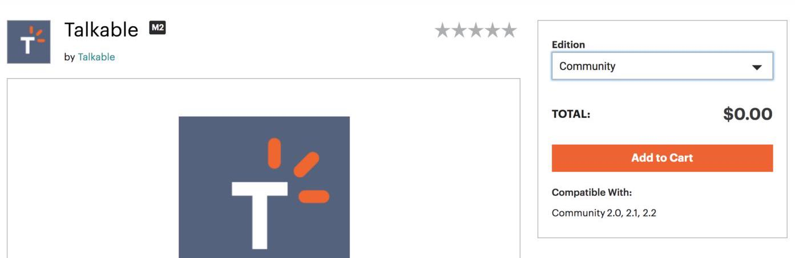Follow Magento Extensions Guide for installation.
Activating the Integration¶
After successful installation, navigate to System → Integrations page of your admin panel.
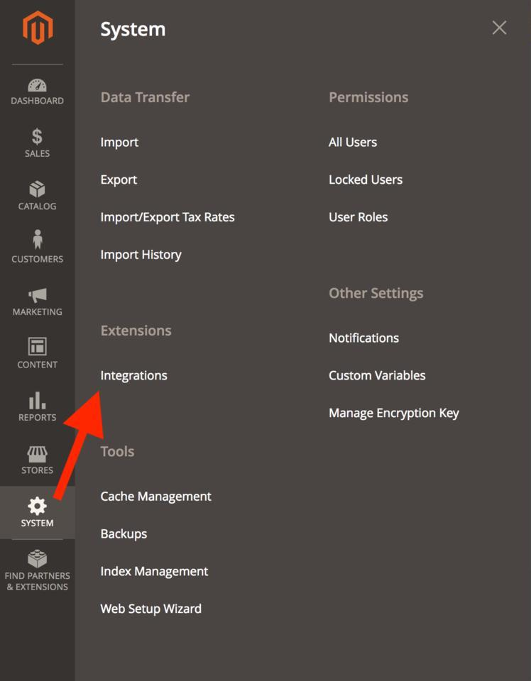Find “Talkable” in the list of integrations and click the Activate link.
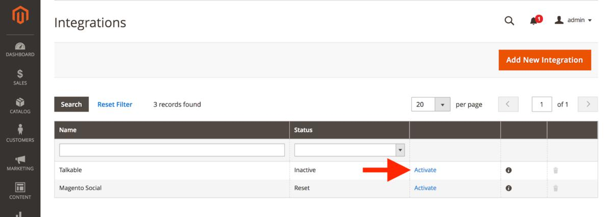Review the list of permissions that the Talkable extension needs and click Allow.
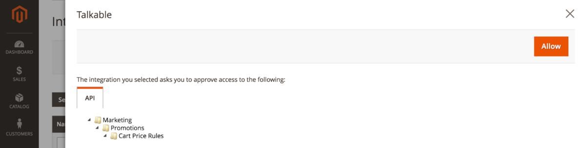Log in to your Talkable account (if you’re already logged in, this step will be omitted).
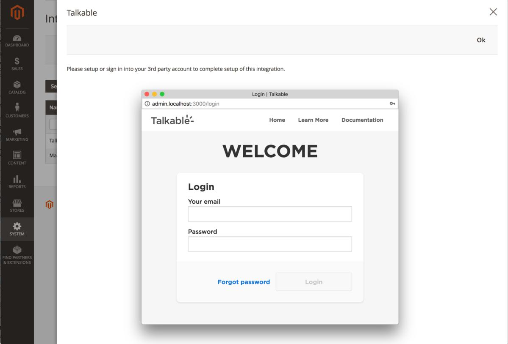
All done! You have successfully integrated Talkable. To verify your Talkable integration, please visit Integration tab in Site Settings.
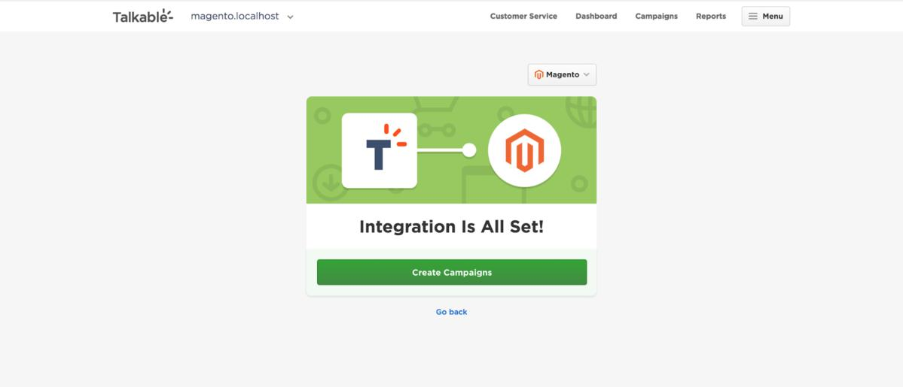
Note
Activating the integration allows Talkable to configure your extension automatically. If you choose not to activate the integration, you will need to specify your Talkable Site ID in the Integration section of extension settings.
Accessing Talkable Configuration¶
To access Talkable extension settings, navigate to Stores → Configuration in your Magento admin panel.
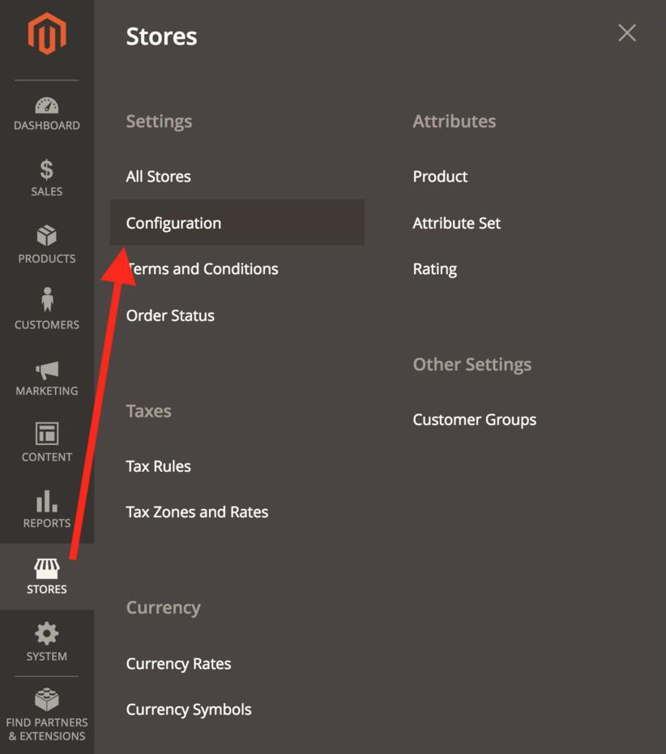Then select Talkable → Talkable Configuration from the list of available configurations. If you have multiple stores, select the desired Store View you want to change the settings for.
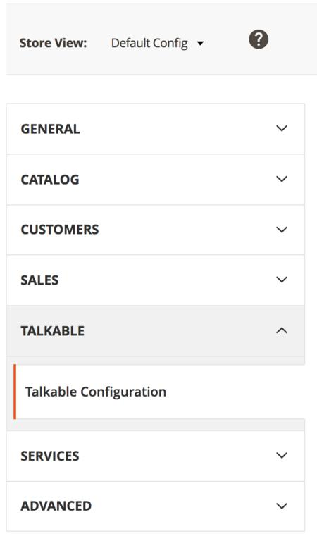
Configuring Talkable Extension¶
The extension configuration screen consists of three sections: Integration, Campaigns and Page URLs.
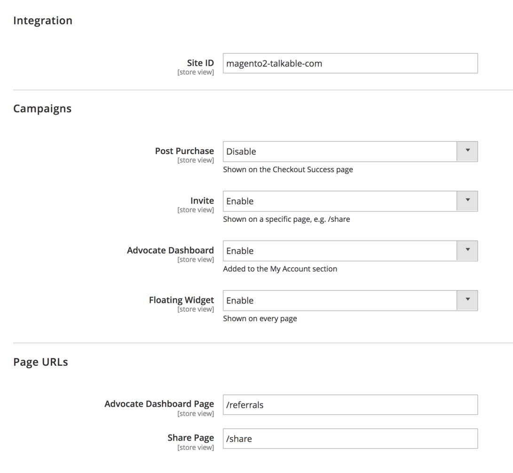
Integration¶
The Integration section allows you to change the Talkable Site ID, which is used to connect your store to your Talkable account.
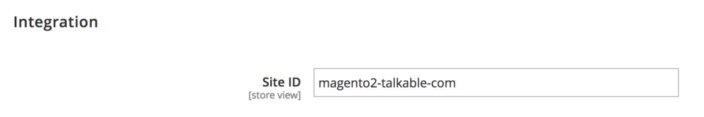
Warning
Only change this setting if you need to connect your store to a different site in the Talkable dashboard. An incorrect value will prevent your campaigns from showing.
Changing the Site ID will invalidate the full page cache. Magento will display a warning message with a link to the Cache Management page. Please follow this link and refresh the invalidated cache types.
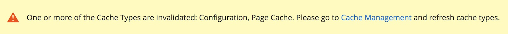Note
If you have activated the extension’s integration, the Site ID will be prefilled (see Activating the Integration). If you chose not to activate the integration, you need to paste the Site ID from your Talkable Site Dashboard into this field.
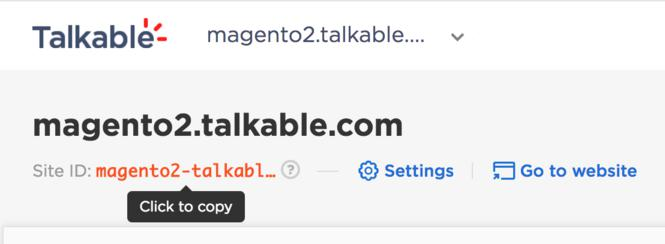Campaigns¶
The Campaigns section allows you to enable or disable different types of campaigns on your site. For example, if you don’t have Standalone or Advocate Dashboard campaigns configured in Talkable, you can disable these campaigns in extension config, so the corresponding pages are not accessible.
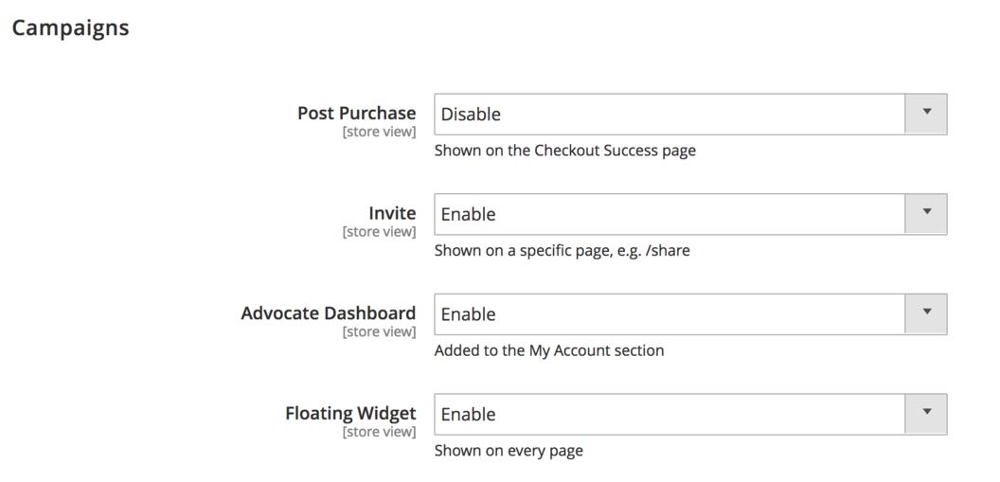Page URLs¶
The Page URLs section allows you to change paths to the Standalone Share and Advocate Dashboard pages. The paths must match the placements you have configured in Talkable for this campaign type. Default values correspond to default placements in Talkable.
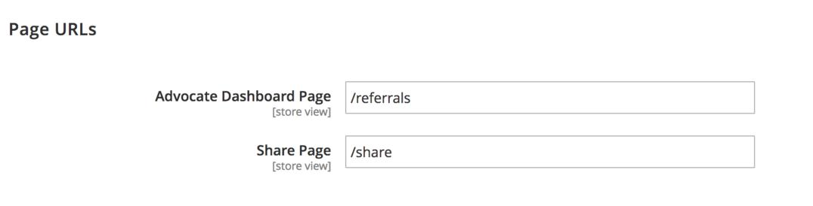Warning
Only change these settings if you have configured custom placements for these campaign types in your Talkable dashboard. Incorrect values will prevent your Standalone or Dashboard campaign from showing.